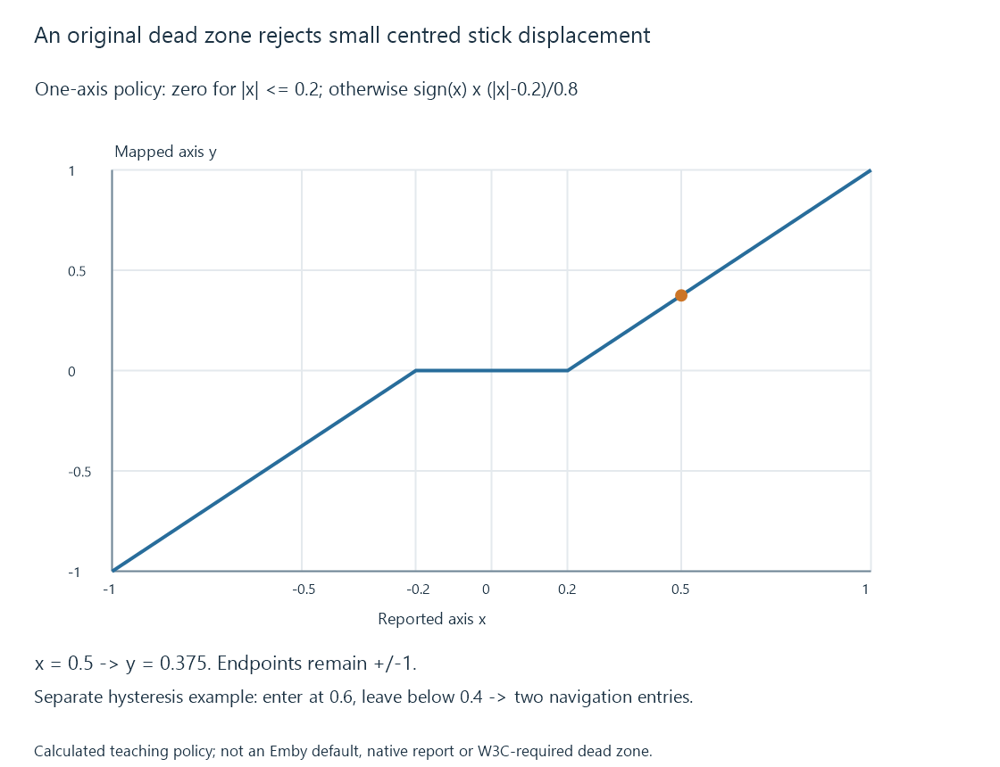

Gamepad input for media navigation
Gamepad input exposes button and axis state that a media application maps into navigation and playback actions with appropriate thresholds, repetition and focus handling.
A gamepad supplies buttons, sticks and other control state. A media app can map that state into focus movement, selection, seeking and playback actions.
The device’s connection and the application’s mapping are separate. A controller working in a game does not establish its behavior in every Emby view.
Values and physical layout need their own meaning
The W3C Gamepad Working Draft describes button values and axes, along with a canonical standard mapping when the browser recognizes a matching layout.
A standard mapping relates reported indices to physical control positions. It does not mean that every controller uses the same printed letters or that an app must assign the same action to every position.
Unrecognized layouts can expose another ordering. Native apps can use platform-specific APIs and mappings.
| Input kind | Example application policy |
|---|---|
| Button transition | Activate selection or toggle playback once |
| Direction held | Move focus with an intended repeat schedule |
| Stick displacement | Convert analog movement into navigation or seeking |
| Reconnection | Rebuild available-device and held-state context |
A dead zone can reject small centre noise
Use an original one-axis model with input x between −1 and 1 and a dead zone of 0.2:
y = 0, if |x| ≤ 0.2
y = sign(x) × (|x| − 0.2) / 0.8, otherwise
The model maps input 0.1 to zero, 0.5 to 0.375, −0.5 to −0.375 and the endpoints to ±1.

This is a teaching policy, not an Emby default or a requirement of the W3C draft. Two-dimensional stick processing can use a radial or another dead-zone arrangement instead.
The purpose is to prevent small resting variation from being interpreted as deliberate movement.
Hysteresis separates entering and leaving an action
A navigation decision near one threshold can chatter if the axis repeatedly crosses it. An original policy enters a positive navigation state at 0.6 and leaves it below 0.4.
| Sample | Input | State after sample |
|---|---|---|
| 1 | 0.55 | Rest |
| 2 | 0.65 | Positive navigation entered |
| 3 | 0.58 | Positive navigation retained |
| 4 | 0.45 | Positive navigation retained |
| 5 | 0.35 | Rest |
| 6 | 0.70 | Positive navigation entered again |
The gap between the thresholds prevents small fluctuations from repeatedly starting/stopping the action. The modeled sequence has two entries into navigation.
An app can then choose a timed repeat while the navigation state remains active. That repeat policy is another decision, not an extra physical press.
A held button needs edge handling
If a player polls not pressed, pressed, pressed, pressed, not pressed, a toggle should not necessarily run on every pressed sample.
Detecting the transition makes one initial action possible. Retaining the state allows different behavior for a control intended to repeat or remain continuous.
Focus changes and disconnected devices also need context. A press already held before a new view opens should not automatically be interpreted as a fresh selection in that view.
Emby’s mapping is an application feature
Emby documents an enhanced gamepad feature with an overview of assigned controls and a way to examine their recognition on the supported app route.
That supplies app-specific context rather than a universal mapping for all clients. Check the particular app’s control view and current navigation/playback context.